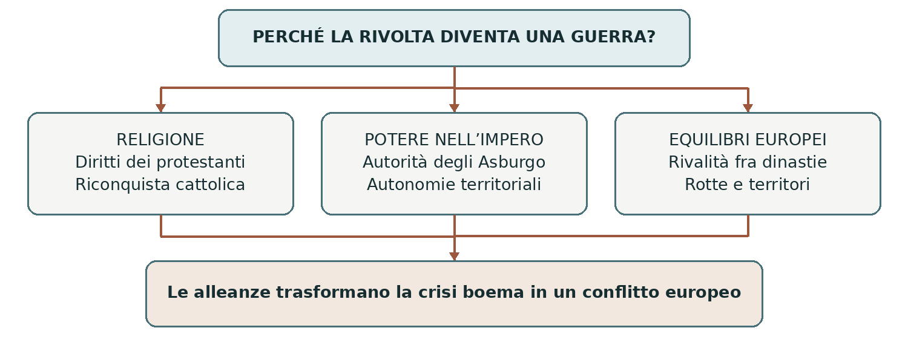
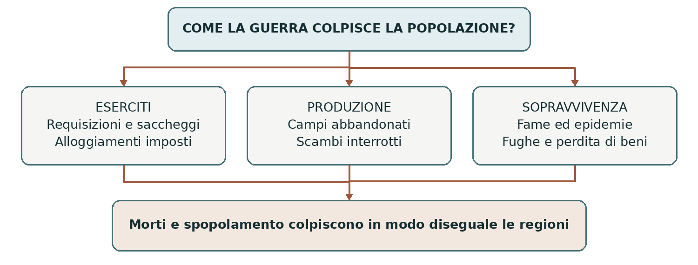
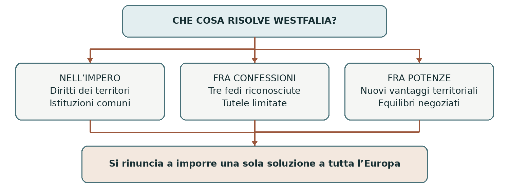

L’EUROPA NELL’ETÀ MODERNA
La guerra dei Trent’anni
Religione potere e società dal 1618 al 1648
La guerra dei Trent’anni iniziò nel 1618 con una rivolta in Boemia e si allargò fino a coinvolgere molte potenze europee. Il principale teatro di guerra fu il Sacro Romano Impero. La contesa intrecciò conflitti religiosi, difesa delle autonomie e rivalità dinastiche; il suo peso ricadde soprattutto sulle popolazioni dei territori attraversati dagli eserciti.
0 Domanda generatrice
Perché una rivolta a Praga si trasformò in una guerra europea e perché, dopo trent’anni, nessuno riuscì a imporre completamente il proprio progetto? Seguire le quattro fasi del conflitto aiuta a riconoscere il meccanismo: ogni vittoria modificava gli equilibri e spingeva altri protagonisti a intervenire.
In sintesi La durata della guerra si spiega con il continuo intreccio fra crisi interne e interventi esterni. Per capirne l’origine bisogna partire dall’Impero dopo la Riforma.
1 Il mondo precedente
All’inizio del Seicento il Sacro Romano Impero comprendeva principati laici ed ecclesiastici, città libere e territori con ampie autonomie. L’imperatore, eletto da un gruppo di principi detti elettori, governava attraverso rapporti e istituzioni comuni, fra cui la Dieta imperiale. Non era il sovrano di uno Stato centralizzato paragonabile alla Francia.
La pace di Augusta del 1555 aveva riconosciuto cattolici e luterani, lasciando ai governanti territoriali un ruolo decisivo nella scelta religiosa. Non aveva però incluso i calvinisti, né risolto tutte le controversie sui beni ecclesiastici. La divisione confessionale si era consolidata; l’Unione protestante del 1608 e la Lega cattolica del 1609 esprimevano la crescente sfiducia fra alcuni territori.
Gli Asburgo erano divisi in due rami: quello austriaco, cui apparteneva la dignità imperiale, e quello spagnolo, che governava anche Milano e i Paesi Bassi meridionali. Collaboravano, ma avevano interessi distinti. La Francia temeva il loro predominio; Danimarca e Svezia competevano per influenza e traffici nell’area baltica.
In sintesi L’Impero era già un sistema politico composito e religiosamente diviso. La crisi boema rese esplosive tensioni che nessun accordo aveva eliminato.
2 Le fratture
La Boemia e la difesa dei privilegi
La Boemia, con capitale Praga, era un regno dell’Impero governato dagli Asburgo. I suoi ceti, soprattutto nobiltà e rappresentanti delle città, difendevano prerogative politiche e libertà religiose. La Lettera di maestà del 1609, concessa da Rodolfo II, aveva riconosciuto diritti ai non cattolici. L’interpretazione e l’applicazione di quei diritti restavano però controverse.
Sotto Mattia, e con l’ascesa di Ferdinando d’Asburgo, fervente cattolico riconosciuto re di Boemia nel 1617, i protestanti temettero un restringimento delle concessioni. Le controversie sulla chiusura o demolizione di luoghi di culto in domini ecclesiastici alimentarono lo scontro. È riduttivo descrivere tutto come la semplice cancellazione, con un unico decreto, delle libertà precedenti.
La defenestrazione di Praga
Il 23 maggio 1618 alcuni nobili protestanti irruppero nel castello di Praga e gettarono da una finestra due governatori regi e un segretario. I tre sopravvissero. La defenestrazione fu un attacco ai rappresentanti del sovrano: dalla contestazione dei provvedimenti si passò a una rivolta politica organizzata.
Nel 1619, dopo la morte di Mattia, Ferdinando fu eletto imperatore con il nome di Ferdinando II. I ceti boemi lo deposero dal trono di Boemia e offrirono la corona a Federico V del Palatinato, principe elettore calvinista. La corona imperiale e quella boema erano cariche diverse: il rifiuto riguardava il suo governo del regno boemo.

In sintesi La defenestrazione fu l’innesco, non l’unica causa. La difesa della confessione e dei privilegi politici spinse i ribelli e gli Asburgo a cercare alleati fuori dalla Boemia.
3 Attori gruppi e conflitti
La religione conta ma non spiega ogni alleanza
I protagonisti agivano per convinzione religiosa, sicurezza, prestigio e controllo delle risorse. Gli schieramenti cambiarono: non esistettero per trent’anni due blocchi immutabili di cattolici e protestanti. Anche fra alleati potevano nascere contrasti sul comando militare o sulle condizioni della pace.
Attori | Obiettivi principali | Elemento da ricordare |
|---|---|---|
Ferdinando II e poi Ferdinando III | Difendere la dinastia, rafforzare l’autorità imperiale e il cattolicesimo. | Gli interessi dei territori imperiali non coincidono sempre con quelli degli Asburgo. |
Lega cattolica e Baviera | Difendere il cattolicesimo e accrescere il ruolo di Massimiliano di Baviera. | Alleati dell’imperatore, ma attenti alla propria autonomia. |
Spagna | Sostenere gli Asburgo austriaci e proteggere collegamenti e possedimenti europei. | Il conflitto si intreccia con la guerra contro le Province Unite. |
Danimarca e Svezia | Sostenere il fronte protestante e difendere interessi dinastici e baltici. | Intervengono in fasi diverse e sono anche concorrenti fra loro. |
Francia | Impedire il predominio asburgico e migliorare la propria posizione europea. | È cattolica, ma finanzia e affianca potenze protestanti. |
Principi città e ceti locali | Conservare diritti, territori, beni e confessione religiosa. | Alcuni luterani raggiungono accordi con l’imperatore cattolico. |
Soldati e popolazioni
I sovrani e i comandanti reclutavano eserciti anche attraverso imprenditori militari, capaci di raccogliere uomini e anticipare denaro. Molti soldati erano mercenari, ma gli eserciti comprendevano anche altre forme di reclutamento. Il generale Albrecht von Wallenstein, al servizio di Ferdinando II, divenne una figura emblematica dell’intreccio fra finanza, comando e potere.
Gli eserciti erano accompagnati da famiglie, artigiani, venditori e personale di servizio. Per mantenerli si imponevano alle comunità denaro, viveri, animali e alloggi. Contadini e abitanti delle città non furono semplici spettatori: negoziarono, fuggirono, resistettero e cercarono di conservare le risorse necessarie a vivere.
In sintesi La guerra coinvolse progetti dinastici e confessionali, ma dipese anche dalla capacità di reclutare e mantenere gli eserciti. Le quattro fasi mostrano come questi elementi si combinarono.
4 Il processo storico
La fase boemo palatina dal 1618 al 1625
Ferdinando II ottenne l’appoggio della Lega cattolica, guidata da Massimiliano di Baviera, e della Spagna. Federico V non riuscì invece a raccogliere un sostegno proporzionato al rischio assunto. La sua confessione calvinista e le divergenze politiche limitarono la solidarietà degli altri principi protestanti.
L’8 novembre 1620, nella battaglia della Montagna Bianca, vicino a Praga, le forze imperiali e della Lega cattolica sconfissero l’esercito dei ceti boemi. Federico fuggì. La vittoria rese possibile una dura repressione: condanne, confische di beni, esilio di oppositori e rafforzamento del cattolicesimo. Negli anni successivi gli Asburgo consolidarono il carattere ereditario della monarchia boema.
La guerra continuò nel Palatinato, il territorio di Federico lungo il Reno e nell’Alto Palatinato. Le forze asburgiche e della Lega ne occuparono le terre. Nel 1623 la dignità elettorale di Federico fu trasferita a Massimiliano di Baviera. La Baviera era dunque fra i beneficiari della vittoria; fu la Boemia a perdere gran parte delle proprie autonomie politiche.
La Valtellina fra religione e passaggi alpini
Anche la Valtellina, valle alpina allora soggetta alle Tre Leghe grigie, i Grigioni, fu coinvolta nelle contese. La sua importanza dipendeva dai collegamenti fra il Milanese spagnolo e i territori asburgici. Controllare una valle significava influire sul passaggio di truppe e rifornimenti.
Nel 1620, durante il cosiddetto Sacro Macello, congiurati cattolici uccisero numerosi riformati della valle. Le vittime non erano soltanto governanti grigioni. La strage si inserì in conflitti locali e internazionali e favorì l’intervento spagnolo. Francia, Venezia e Savoia si opposero all’espansione dell’influenza asburgica.
La vicenda non si risolse in un unico passaggio: accordi e occupazioni si susseguirono. Nel 1639 la valle tornò sotto il governo grigione, ma con garanzie per il cattolicesimo e restrizioni contro il culto riformato. Il caso mostra come una regione periferica potesse diventare importante nella competizione europea.
Risultato militare | Effetto politico |
|---|---|
Sconfitta dei ribelli boemi | Rafforzamento del potere asburgico in Boemia. |
Occupazione del Palatinato | Ridimensionamento di Federico V e vantaggi per la Baviera. |
Contesa dei valichi alpini | Allargamento della rivalità fra Francia e Asburgo. |
In sintesi La vittoria cattolica sembrò decisiva, ma l’espansione del potere asburgico allarmò altri governi. Questo timore contribuì al successivo intervento danese.
La fase danese dal 1625 al 1629
Perché interviene Cristiano IV
Il re Cristiano IV di Danimarca, luterano, intervenne nel 1625. Era anche duca di Holstein, quindi aveva una posizione dentro l’Impero. Voleva difendere interessi dinastici e politici nella Germania settentrionale, sostenere i protestanti e impedire che il potere imperiale minacciasse l’area baltica.
La sua scelta non fu un semplice ordine eseguito per conto di Richelieu. Il ministro di Luigi XIII perseguiva una politica ostile all’egemonia asburgica, ma Danimarca, Inghilterra, Province Unite e altri protagonisti avevano obiettivi propri. La politica francese favoriva la resistenza agli Asburgo, senza controllare ogni decisione degli alleati.
La sconfitta danese e la pace di Lubecca
Contro Cristiano operarono le forze della Lega cattolica comandate da Tilly e quelle imperiali guidate da Wallenstein. Nel 1626, a Lutter, Tilly sconfisse l’esercito danese. Le successive avanzate imperiali raggiunsero lo Jutland, la parte continentale del regno di Danimarca. Il successo militare non equivalse però alla conquista di tutto il regno e delle sue isole.
Con la pace di Lubecca del 1629, Cristiano recuperò i territori occupati in cambio dell’impegno a non intervenire più nelle questioni dell’Impero. L’imperatore aveva eliminato un avversario importante; restavano però le preoccupazioni dei principi e delle potenze che temevano il suo rafforzamento.
L’Editto di restituzione
Nel 1629 Ferdinando II emanò l’Editto di restituzione. Rivendicava la restituzione alla Chiesa cattolica di beni ecclesiastici secolarizzati dai protestanti a partire dal 1552. Il provvedimento pretendeva di imporre una lettura cattolica degli accordi religiosi precedenti e minacciava il patrimonio e il potere di numerosi territori.
L’editto non era soltanto una misura religiosa: decidere a chi appartenessero monasteri e vescovati significava decidere anche chi ne ricevesse rendite e diritti politici. Il modo autoritario di procedere dell’imperatore suscitava diffidenza persino in principi cattolici, gelosi della propria autonomia.
Vantaggio dell’imperatore | Nuova difficoltà |
|---|---|
La Danimarca esce dal conflitto. | Svezia e altri protagonisti temono l’espansione imperiale. |
L’editto mira a recuperare beni cattolici. | I protestanti temono di perdere terre e potere. |
Gli eserciti accrescono la forza di Ferdinando. | I principi temono un’eccessiva concentrazione del potere. |
In sintesi La vittoria del 1629 non stabilizzò l’Impero. Il tentativo di trasformarla in un predominio religioso e politico rese più probabile un nuovo intervento esterno.
La fase svedese dal 1630 al 1635
Gustavo Adolfo e l’equilibrio baltico
Nel 1630 il re di Svezia Gustavo II Adolfo sbarcò in Pomerania. Si presentava come difensore dei protestanti, ma voleva anche proteggere la sicurezza e l’influenza svedese sul Baltico. La presenza imperiale sulla costa settentrionale tedesca era una minaccia strategica.
La Francia sostenne finanziariamente la Svezia con un accordo del 1631, concluso a Bärwalde. Il sussidio rafforzò l’intervento svedese, già iniziato: non bisogna invertire la sequenza e attribuire a Richelieu l’intera iniziativa. La collaborazione fra una monarchia cattolica e una luterana rende evidente il peso degli interessi politici.
Vittorie perdite e rovesciamenti
Nel 1631 Gustavo Adolfo vinse a Breitenfeld, vicino a Lipsia. La vittoria rovesciò l’equilibrio militare e aprì l’avanzata svedese verso la Germania centrale e meridionale. Nello stesso anno la presa e il saccheggio di Magdeburgo da parte delle truppe imperiali e della Lega avevano mostrato la violenza della guerra urbana.
Nel 1632, a Lützen, gli svedesi riuscirono a mantenere il campo, ma Gustavo Adolfo rimase ucciso. La sua morte fu un colpo gravissimo, senza provocare l’immediata uscita della Svezia dalla guerra. La direzione politica passò al cancelliere Axel Oxenstierna, mentre altri comandanti continuarono le operazioni.
Il cambiamento decisivo arrivò nel 1634, con la sconfitta svedese a Nördlingen contro forze imperiali e spagnole. Diversi principi protestanti cominciarono a cercare un accordo con Ferdinando II. Anche nel fronte imperiale erano esistite tensioni: Wallenstein, sospettato di infedeltà, era stato rimosso e ucciso nello stesso anno.
La pace di Praga del 1635
La pace di Praga riavvicinò l’imperatore alla Sassonia e a molti altri territori dell’Impero. Il compromesso sospendeva per quarant’anni l’applicazione dell’Editto di restituzione. Non fu una sottomissione senza condizioni di tutti i luterani, né concluse la guerra europea: Svezia e Francia rimasero fuori dall’accordo.
Luogo e anno | Evento da distinguere |
|---|---|
Breitenfeld 1631 | Grande vittoria svedese vicino a Lipsia. |
Lützen 1632 | Morte di Gustavo Adolfo; la Svezia continua a combattere. |
Nördlingen 1634 | Sconfitta svedese che favorisce il compromesso di Praga. |
In sintesi Praga mostrò che un compromesso interno era possibile, ma non bastava a soddisfare le potenze esterne. La Francia passò allora all’intervento militare aperto contro la Spagna.
La fase franco svedese dal 1635 al 1648
La Francia entra direttamente nella guerra
Nel 1635 la Francia dichiarò guerra alla Spagna, entrando apertamente nel conflitto contro gli Asburgo. Aveva già sostenuto altri avversari della dinastia e condotto operazioni su fronti collegati: la novità era il coinvolgimento diretto e duraturo su scala più ampia. Il cardinale Richelieu agiva per rafforzare la monarchia di Luigi XIII e impedire il predominio asburgico.
La Francia collaborò con la Svezia, con le Province Unite e con diversi alleati tedeschi. La rete delle alleanze variò secondo i fronti e gli anni. La Confederazione elvetica non va inserita come un unico Stato belligerante nel blocco francese: i cantoni cercarono nel complesso di restare fuori dalla guerra, pur fra tensioni confessionali, legami esterni e problemi nei territori vicini.
Una guerra che supera i singoli protagonisti
I primi anni non furono una marcia trionfale francese: la monarchia dovette affrontare difficoltà militari e finanziarie. Il conflitto proseguì su più fronti e si intrecciò con quello fra Spagna e Province Unite, ripreso dopo la fine della tregua nel 1621, e con le contese nell’Italia settentrionale.
Ferdinando II morì nel 1637 e gli succedette Ferdinando III. Richelieu morì nel 1642, Luigi XIII nel 1643. In Francia la reggenza di Anna d’Austria e il ministro Mazzarino continuarono la guerra durante la minore età di Luigi XIV. Le politiche degli Stati sopravvissero ai loro principali dirigenti.
La vittoria francese sugli spagnoli a Rocroi nel 1643 accrebbe il prestigio militare della Francia, ma non distrusse in un solo giorno la potenza spagnola. Le vittorie svedesi, fra cui Jankov nel 1645, e l’esaurimento delle risorse rafforzarono la pressione per una pace negoziata.
Combattere e negoziare nello stesso tempo
I negoziati si svolsero nelle città di Münster e Osnabrück, in Westfalia. Furono lunghi perché occorreva conciliare rivendicazioni territoriali, beni ecclesiastici, diritti dei principi e garanzie religiose. Gli eserciti continuarono a operare mentre i diplomatici discutevano: ottenere un vantaggio sul campo poteva migliorare le condizioni dell’accordo.
Il 1648 chiuse la guerra dei Trent’anni, ma Francia e Spagna continuarono a combattersi fino alla pace dei Pirenei del 1659. Non si può quindi parlare di una pace unica che terminò simultaneamente tutte le guerre europee.
In sintesi L’esito nacque dalla pressione militare e dall’esaurimento, ma anche dal compromesso. Per comprendere il prezzo del conflitto e il significato della pace occorre mettere in dialogo esperienze e documenti.
5 Le fonti in dialogo
L’esperienza della guerra e le regole della pace
Un diario e un trattato rispondono a domande differenti. Il primo racconta un’esperienza; il secondo stabilisce obblighi e diritti. I contenuti qui presentati sono parafrasi didattiche, non citazioni letterali. Gli indirizzi dei testi integrali sono riportati nella nota docente.
Fonte A Il diario di Peter Hagendorf
Provenienza. Peter Hagendorf fu un soldato mercenario. Il suo diario documenta marce, combattimenti e vicende familiari della guerra. Consideriamo il racconto della presa di Magdeburgo del maggio 1631, pubblicato nel progetto German History Intersections.
Contenuto in parafrasi. Hagendorf racconta di essere entrato nella città durante l’assalto e di essere stato ferito. Sua moglie vi torna mentre gli edifici bruciano, cercando biancheria per assisterlo; riporta anche oggetti poi venduti. Il racconto unisce ferite, cure familiari e partecipazione alla spoliazione della città.
Come leggerla. Il soldato è insieme vittima della violenza e parte dell’esercito che la esercita. La fonte fa emergere anche il ruolo delle donne al seguito delle truppe. Non offre il punto di vista completo degli abitanti di Magdeburgo e non permette di ricavare da sola il numero delle vittime.
Fonte B Il trattato di Osnabrück del 1648
Provenienza. L’accordo fu concluso fra l’imperatore, la Svezia e i rispettivi alleati, con la partecipazione degli stati dell’Impero. È una fonte diplomatica e normativa: definisce condizioni da applicare, non descrive automaticamente ciò che avvenne in ogni territorio.
Contenuto in parafrasi. Nell’articolo V, alcune norme tutelano il culto domestico e altri diritti di sudditi appartenenti a una confessione diversa da quella del governante. Nell’articolo VIII, ai territori imperiali è riconosciuto il diritto di concludere alleanze, purché non siano dirette contro l’imperatore, l’Impero e la pace.
Come leggerla. Le condizioni sono importanti quanto i diritti riconosciuti. Il trattato limita il potere dei governanti sulle confessioni tutelate e protegge le autonomie territoriali, ma conserva un quadro imperiale comune. Non proclama una libertà religiosa illimitata né l’indipendenza assoluta di ogni principato.
Aspetto | Diario | Trattato |
|---|---|---|
Soggetto | Un soldato racconta la propria esperienza. | Rappresentanti politici concordano norme. |
Informazioni | Marce, violenze e vita familiare. | Diritti, obblighi e limiti del nuovo ordine. |
Limite | Una prospettiva individuale. | Le norme non provano da sole la loro applicazione. |
In sintesi Il diario aiuta a capire il costo umano; il trattato mostra la soluzione politica. Leggere insieme i due documenti evita di ridurre la guerra a un elenco di battaglie e la pace a una semplice data.
6 Conseguenze e nuovo assetto
Westfalia come insieme di accordi
La pace di Westfalia comprende più accordi. Il 24 ottobre 1648 furono conclusi i principali trattati fra l’imperatore, la Francia e la Svezia, legati ai negoziati di Münster e Osnabrück. Nello stesso anno un distinto trattato a Münster, fra Spagna e Province Unite, riconobbe l’indipendenza della repubblica olandese. Accordi collegati non significano un unico documento firmato da tutti.
Che cosa cambia nell’Impero
La pace confermò e precisò le autonomie dei territori imperiali e il loro ruolo nelle decisioni comuni. Per questioni come guerra, tasse e alleanze, l’imperatore doveva operare nel quadro delle istituzioni dell’Impero e con la partecipazione dei suoi stati. Questi potevano stringere alleanze esterne, ma con limiti che impedivano di rivolgerle contro l’Impero stesso.
L’autorità imperiale non divenne un titolo vuoto e i principati non furono trasformati tutti in Stati completamente indipendenti. Continuarono a esistere imperatore, Dieta, tribunali e obblighi comuni. Il Sacro Romano Impero rimase in vita fino al 1806. A fallire fu soprattutto il tentativo di imporre una soluzione più accentrata e confessionale a tutto l’insieme.
I principali cambiamenti territoriali
Protagonista | Risultati essenziali |
|---|---|
Francia | Ottiene o consolida diritti in Alsazia e il riconoscimento del possesso di Metz, Toul e Verdun. Non si annette tutta l’Alsazia nel senso attuale. |
Svezia | Ottiene territori strategici nell’area della Pomerania occidentale, Wismar e i principati di Brema e Verden; rafforza la presenza sulle coste tedesche. |
Brandeburgo | Riceve la Pomerania orientale e altri territori; aumenta il proprio peso dentro l’Impero. |
Baviera e Palatinato | La Baviera conserva dignità elettorale e Alto Palatinato; il ramo palatino recupera il Palatinato renano e riceve una nuova dignità elettorale. |
Province Unite | La Spagna ne riconosce l’indipendenza nel trattato di Münster. |
Confederazione elvetica | Viene riconosciuta l’esenzione dalla giurisdizione imperiale, consolidando la sua separazione dall’Impero. |
Gli Asburgo austriaci rinunciarono a imporre il proprio predominio sull’intero Impero, ma consolidarono il controllo sui domini ereditari, compresa la Boemia. La Spagna perse posizioni importanti, senza cessare di essere una grande potenza. Francia e Svezia uscirono rafforzate, attraverso vantaggi diversi.
In sintesi Westfalia ridistribuì diritti e potere senza cancellare l’Impero. La nuova sistemazione religiosa completò quella politica e territoriale.
La sistemazione religiosa e il costo umano
Tre confessioni e tutele limitate
Nell’Impero furono riconosciute tre confessioni: cattolica, luterana e riformata, cioè calvinista. Il riconoscimento dei riformati colmava una delle lacune della pace di Augusta. Il 1624 fu assunto come anno di riferimento per molte questioni riguardanti beni ecclesiastici e diritti di culto, con regole ed eccezioni specifiche.
Il potere dei principi in materia religiosa rimase ampio, ma non illimitato. La pace introdusse garanzie per i sudditi delle confessioni riconosciute, anche attraverso la tutela di alcune pratiche di culto, dei beni e della possibilità di emigrare. Il diritto di emigrazione esisteva già ad Augusta: la novità non può essere ridotta al semplice permesso di partire.
Le tutele non erano una moderna libertà religiosa universale e non comprendevano tutte le fedi. Neppure la religione scomparve dalla politica. Fu invece riconosciuta la necessità di far convivere legalmente confessioni diverse senza aspettare che raggiungessero un accordo dottrinale.
Le conseguenze sulle comunità
La guerra causò una gravissima crisi demografica ed economica in molte regioni dell’Impero. Alle morti in combattimento si aggiunsero fame, epidemie, violenze e fughe. Requisire animali e grano poteva compromettere il raccolto successivo: la distruzione proseguiva oltre il passaggio immediato di un esercito.
Le perdite furono molto diseguali. Alcuni territori e città subirono devastazioni ripetute, altri furono meno colpiti. Le stime complessive restano discusse perché le fonti sono incomplete e lo spopolamento comprende anche migrazioni e mancate nascite. È più corretto spiegare questi meccanismi che applicare una percentuale unica a tutta la Germania.

In sintesi La pace regolò i conflitti confessionali e avviò la ricostruzione, ma non cancellò subito debiti, spopolamento e distruzioni. Il nuovo equilibrio richiese tempo per diventare vita quotidiana.
7 Conclusione
Perché la guerra durò trent’anni
La rivolta boema diventò europea perché toccava l’equilibrio fra dinastie e territori. Le vittorie degli Asburgo alimentarono i timori della Danimarca, poi della Svezia e della Francia. Quando un fronte sembrava vicino al successo, nuovi interventi rimettevano in discussione l’esito. Anche gli alleati perseguivano interessi diversi, rendendo difficile una pace accettabile per tutti.
La religione restò una forza decisiva, ma non bastò a determinare gli schieramenti. Il caso della Francia cattolica alleata con la Svezia luterana e l’accordo di Praga fra l’imperatore cattolico e principi luterani mostrano che la sicurezza e l’autonomia potevano attraversare i confini confessionali.
Westfalia stabilizzò una pluralità di poteri e confessioni. Viene spesso presentata come l’atto di nascita del sistema degli Stati sovrani; questa è una lettura storiografica da usare con cautela. Il 1648 non creò da zero gli Stati moderni e non eliminò gerarchie, legami dinastici o appartenenze imperiali. La sua importanza concreta fu la costruzione di un compromesso durevole attraverso negoziati multilaterali.
Mappa concettuale

Sintesi finale
La guerra nacque dall’intreccio fra conflitto religioso e difesa dei diritti boemi.
Le vittorie imperiali spinsero nuove potenze a intervenire contro gli Asburgo.
Le quattro fasi descrivono il mutamento degli equilibri e degli schieramenti.
Soldati e civili subirono una lunga crisi fatta di violenza, fame e malattie.
Westfalia riconobbe tre confessioni e precisò le autonomie nell’Impero.
Il conflitto terminò con un compromesso, non con la realizzazione integrale di un solo progetto.
Coordinate essenziali
Praga e la Boemia: innesco della rivolta. Palatinato e Reno: territori contesi e vie strategiche. Germania settentrionale e Baltico: interessi danesi e svedesi. Valtellina: collegamenti alpini. Münster e Osnabrück: negoziati di pace. 1618–1648: guerra dei Trent’anni; 1659: conclusione della guerra franco-spagnola.
Date e parole per orientarsi
Linea del tempo ragionata
Data | Snodo | Che cosa cambia |
|---|---|---|
1618 | Defenestrazione di Praga | La protesta diventa rivolta aperta. |
1619 | Federico V re di Boemia | La crisi coinvolge direttamente il Palatinato. |
1620 | Montagna Bianca | Sconfitta boema e rafforzamento asburgico. |
1625–1629 | Intervento danese | Lubecca chiude il tentativo di Cristiano IV. |
1629 | Editto di restituzione | Il successo militare alimenta una nuova offensiva confessionale. |
1630–1632 | Intervento svedese | Breitenfeld cambia gli equilibri; a Lützen muore il re. |
1634–1635 | Nördlingen e pace di Praga | La sconfitta svedese favorisce un accordo interno. |
1635 | Intervento francese aperto | La guerra franco-spagnola amplia il conflitto. |
1648 | Pace di Westfalia | Si stabilizza un nuovo assetto imperiale ed europeo. |
1659 | Pace dei Pirenei | Termina anche la guerra fra Francia e Spagna. |
Vocabolario essenziale
Parola | Definizione |
|---|---|
Dieta imperiale | Assemblea dei rappresentanti degli stati dell’Impero. |
Principe elettore | Titolare del diritto di partecipare all’elezione dell’imperatore. |
Ceti o stati | Corpi politici con diritti di rappresentanza; non coincidono con tutti gli abitanti. |
Confessione | Comunità religiosa con una dottrina e pratiche definite. |
Egemonia | Predominio politico e militare su altri poteri. |
Mercenario | Soldato reclutato e remunerato per prestare servizio militare. |
Requisizione | Prelievo imposto di beni e risorse per le necessità dell’esercito. |
Secolarizzazione | In questo contesto, passaggio di beni ecclesiastici a poteri laici. |
Sussidio | Sostegno finanziario concesso da una potenza a un alleato. |
Ripassare e ragionare
Saperi irrinunciabili
La pace di Augusta aveva lasciato aperte questioni religiose e patrimoniali.
La defenestrazione del 1618 è l’innesco di una crisi politica e confessionale.
Boemia e Palatinato sono territori diversi, legati dalla scelta di Federico V.
La Montagna Bianca rafforza gli Asburgo in Boemia e favorisce la Baviera.
La fase danese termina con Lubecca; l’Editto di restituzione apre nuove tensioni.
Gustavo Adolfo interviene nel 1630, vince a Breitenfeld e muore a Lützen.
Nördlingen favorisce la pace di Praga, che non comprende Francia e Svezia.
Dal 1635 la Francia cattolica combatte apertamente la Spagna cattolica.
Le risorse necessarie agli eserciti trasformano la vita di soldati e civili.
Westfalia rafforza autonomie e garanzie, ma non abolisce il Sacro Romano Impero.
Le tre confessioni riconosciute non equivalgono alla libertà religiosa per tutti.
Il conflitto franco-spagnolo continua fino al 1659.
Attività di comprensione
A Ricostruisci le quattro fasi. Per ciascuna indica un protagonista esterno o territoriale, il suo obiettivo, uno snodo militare e l’esito. Spiega perché l’esito non chiude subito l’intera guerra.
B Leggi le fonti. Alla pagina 8, quali dettagli mostrano che il soldato è anche parte della violenza? Quale clausola del trattato impedisce di parlare di completa indipendenza dei principati?
C Correggi e motiva. «Dopo il 1620 viene punita la Baviera»; «Gustavo Adolfo muore a Lipsia nel 1632»; «tutti i cattolici combattono dalla stessa parte»; «nel 1648 finiscono tutte le guerre europee».
D Argomenta. In 15 righe rispondi alla domanda iniziale usando due passaggi fra le fasi e un risultato di Westfalia. Distingui la causa immediata dai fattori che prolungano il conflitto.
Riferimenti essenziali
Fonte di partenza: lezione e mappe del docente guerra trent’anni.pdf. Controlli e approfondimenti: German History in Documents and Images, testi dell’Editto di restituzione e della pace di Westfalia; German History Intersections, diario di Peter Hagendorf; Die Welt der Habsburger, schede sulla rivolta boema e sulla Montagna Bianca; Dizionario storico della Svizzera, Valtellina; LEO-BW, Editto di restituzione; Museum Lützen 1632. Riferimenti completi nella nota docente.